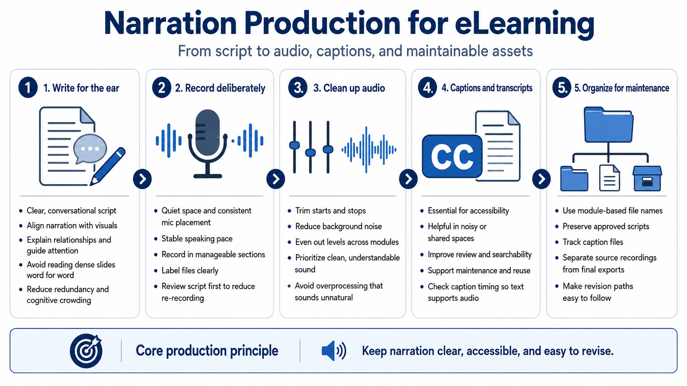

Audio and Narration Production
Connecting to LMS... Progress: in progress

Narration
Narration production begins with writing. A good script is clear, conversational, and aligned with the screen or visual it supports. It should explain relationships, guide attention, and provide useful context. It should not simply read a dense slide word for word. When narration and on-screen text duplicate each other too closely, the experience can feel redundant and mentally crowded.
Recording voiceover requires a practical production mindset. Use a quiet space, consistent microphone placement, and a stable speaking pace. Record in manageable sections, label files clearly, and keep the script version connected to the audio version. Re-recording is sometimes necessary, but careful script review before recording prevents avoidable churn.
Audio cleanup can include trimming, reducing background noise, evening out levels, and improving consistency across modules. Tools such as Audition or similar audio editors can support these tasks conceptually, but the goal is not overproduction. Learners usually need clean, understandable audio more than dramatic processing. Too much processing can sound unnatural or distracting.
Captions and transcripts are essential production assets. Captions support learners who cannot hear the audio, learners in shared or noisy spaces, and learners who process information better with text. Transcripts help review, searchability, accessibility, and maintenance. Caption timing should be checked enough that the text supports the audio rather than competing with it.
Keep narration assets organized and easy to revise. Use module-based file names, preserve approved scripts, track caption files, and avoid mixing source recordings with final exports. Course maintenance becomes far easier when the team can find the exact script, audio file, and caption file that correspond to a module.